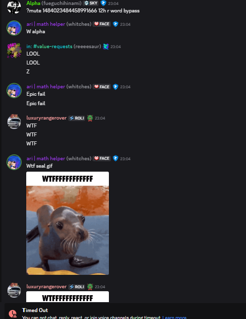
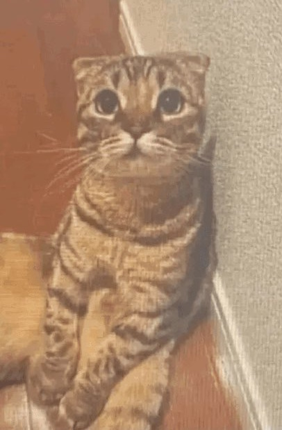

Vibecoder G3orge Muted and Deported In First API-Lounge Incident Since December
March 18th, 2025

By: Glorprora
Lead Reporter
Just in, Known Vibecoder G3orge, described by some as a "larp", has been removed from API-Lounge
for 12 hours following controversial and hateful statements towards detractors, who claim his site was coded using Artifical Intelligence, a dividing topic in both api-lounge and Rolimon's as a whole.
Experts say the design of his claimed "unique" site looks extremely similar to websites generated by ChatGPT.
When confronted by members of API-Lounge, G3orge engaged in many rude and hateful comments against the confrontators, with the final resulting
in swift removal from API-Lounge, when reported to moderation (a rare occurance in api-lounge), he lashed out, calling detractors "meat riders".
Quickly after his mocking of the moderation team, he was swiftly eliminated by a bullet to the torso by moderator "Alpha", who was in need of a log.
This marks the first incident in api-lounge since the December 22nd incident, in which tinycatsocks sent graphic content of the death of right-wing political activist, Charlie Kirk.
RoAnal Developer, LuxuryRangeRover Under Controversy For Racist Comments
March 14th, 2026
By: Glorprora
Lead Reporter
Recently, LuxuryRangeRover has received significant backlash for various racist comments found that he made between the dates of June 2025 and Feburary 2026 within the presence of api-lounge.
The controversy has followed after numerous lackluster consequences for these racist comments made by LuxuryRangeRover. Protestors and detractors believe that he received, being only 1 hour automatic punishments issued for filter violations are not enough, his response to the controversy, doubling down, has only further enraged protestors, who recently protested these comments in the DMs of every Rolimon's moderator, and by deleting RoAnalytics from their apps.
To Be Continued.
#FreeSherbert | Small Kitten, Sherbert, Kidnapped and Sold By ZebPaws
September 17th, 2025

By: Aurora Publications
Reporter
On September 1st, Sherbert, a loveable homed kitten, was taken by Zeb (@zebbes) out of his home and sold on Grailed, a fashion site, for 48$.
Experts say, these actions stems from the offender (Zeb, known by some as ZebPaws or zebbes)'s excessive greed for money, shutting down the humanity remaining inside this furry catnapping criminal.
Inside of the listing photo, you can clearly see the victim, Sherbert, shivering whilst in a position of fear, clearly subdued by the aggressiveness of Zeb against him and the stories of what Zeb, known by some as Zebpaws or zebbes, has done to previous victims.
Sherbert's whereabouts have been largely unknown since the reveal of Zeb's listing of Sherbert, the original Grailed listing has failed to have been found by both the media and FreeSherbert activists. Furthermore, it is the duty of the public to put our effort into
saving this helpless animal that is at the mercy of Zeb, who has even been taunting those who have called him out for his horrific crimes, along with oppressing those who mention Sherbert inside of his Discord server.
On September 16th, 2025, the Federal Bureau of Investigation issued a Wanted document for Zeb, revealing his true name to be "Zeb Zeb", as such, henceforth he shall be referred to in this article by his last name, Zeb.
Along with his height at 4'1", his weight at 238 pounds, and other previously known information about Zeb.
The bureau is offering $10,000 for any information that leads to the arrest and conviction of Zeb "z8by" Zeb.
If you have any tips or information that could lead to his arrest, call 1-800-CALL-FBI now.
Request for comment from Zeb was not met with response.
Update, September 17th, 2025: Following the makings of this article, the whereabouts of Sherbert were completely unknown,
however, the fluffy offender, Zeb, has now submitted himself for interview. Until now it has been speculated that Sherbert had been sold on Grailed or been murdered in cold blood by the violent fluffy comblud Zeb,
however, in light of this new information exlusively discovered by Aurora Publications, we now know that the listing of Sherbert had not resulted in a completed deal,
and that Sherbert is still in the hands of Zeb. During this interview, multiple hidden messages from Sherbert were sneakily relayed, confirmed by his family members as authentic and acting as a confirmation of life, these are what we will focus on today.
Another, third message was relayed during this interview, revealing that Sherbert is being kept in a property in North Carolina.
We implore all readers to put pressure on North Carolinian authorities to help find Sherbert and take down Fluffy Comblud gangster, Zeb, and relay any information known regarding Sherbert to us here immediately, along with spreading awareness with hashtag FreeSherbert!